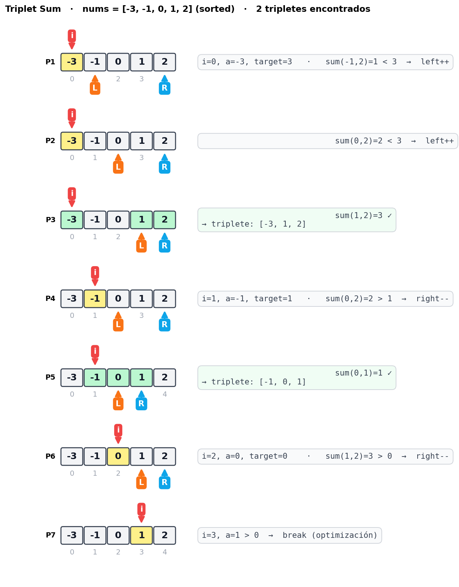
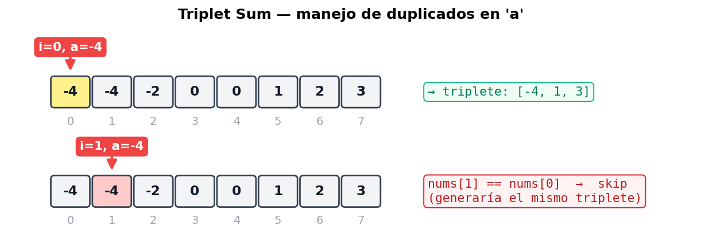
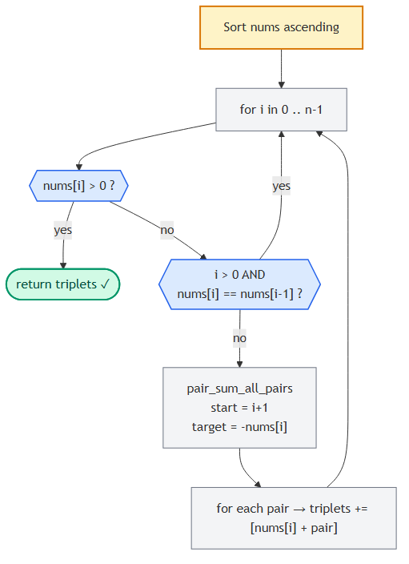

Triplet Sum
📍 Two Pointers · Problema 2/6 · ⬅ Pair Sum · 🏠 Chapter · Largest Container ➡ · 📚 KB Index
TL;DR — Encontrar todos los tripletes únicos
[a, b, c]que sumen 0. Estrategia: sort el array, fijaracon un loop externo, y aplicar pair-sum con two pointers en el sub-array para encontrarb + c = -a. Skip de duplicados enay enbpara no generar tripletes repetidos. O(n²) tiempo, O(1) espacio extra.
📑 In this entry¶
- 🎓 For Dummies — empezá por acá
- Problema
- Brute force O(n³) y por qué no alcanza
- La idea: reducir a Pair Sum
- Manejo de duplicados (caso a y caso b)
- Optimización: cortar cuando a > 0
- Trace paso a paso
- Algorithm flowchart
- Implementación
- Complexity Analysis
- Test Cases
- ⭐ Amplification: variantes y follow-ups
- ⚠️ Pitfalls
- Interview Tips
🎓 For Dummies — empezá por acá¶
Analogía: imaginá que tenés un montón de monedas con valores positivos y negativos (deudas y créditos). Te piden encontrar todos los grupos de 3 monedas que sumen exactamente 0 (o sea, que se cancelen entre ellas). No querés grupos repetidos.
Forma boluda: probás todas las combinaciones de 3. Con 100 monedas son ≈ 100×100×100 = 1.000.000 combinaciones. Encima tenés que filtrar duplicados a mano. Te morís.
Forma piola — el truco: fijá una moneda y buscá un par entre las demás que cancele esa primera. Si fijás una moneda de valor -3, necesitás que las otras dos sumen +3. Eso es exactamente Pair Sum, que ya sabés resolver en O(n) si el array está ordenado.
Pasos:
- Ordenás todas las monedas de menor a mayor.
- Para cada moneda
a(loop externo), buscás un par[b, c]en lo que queda a la derecha que sume-a. Eso es two-pointer inward. - Para no generar tripletes duplicados, salteás valores repetidos de
ay deb.
¿Por qué se hace O(n²) y no O(n³)? Porque el loop externo es n, y para cada a la búsqueda de pareja es O(n) (two pointers, no doble for). Total: n × n = n².
Trampas comunes¶
- ⚠️ No ordenar el array primero. Sin sort no podés usar two pointers para
b + c = -ani dedupear de forma simple. Ordenar agrega O(n log n), que queda dominado por el O(n²) total — no afecta el orden de magnitud. - ⚠️ Olvidar el skip de duplicados. Si
nums = [-1, -1, 0, 1, 1], sin skip vas a sacar[-1, 0, 1]dos veces (una con cada-1comoa, otra con cada1comoc). - ⚠️ Skipear duplicados antes de buscar par en lugar de después de matchearlo. El skip de
ase hace antes del two-pointer inner; el skip debse hace después de matchear, mientras avanzásleft.
¿Listo para la versión completa? ⬇️
Problema¶
Dado un array de enteros, devolvé todos los tripletes [a, b, c] tales que a + b + c = 0. La solución no debe contener tripletes duplicados (ej: [1, 2, 3] y [2, 3, 1] son duplicados — el orden interno del triplete no importa). Si no hay tripletes válidos, devolvé [].
Ejemplo¶
Input: nums = [0, -1, 2, -3, 1]
Output: [[-3, 1, 2], [-1, 0, 1]]
Cada triplete puede salir en cualquier orden, y la lista de tripletes también puede salir en cualquier orden.
Brute force O(n³) y por qué no alcanza¶
La forma directa: tres for-loops anidados y un set para deduplicar.
function tripletSumBruteForce(nums) {
const n = nums.length;
const triplets = new Set();
for (let i = 0; i < n; i++) {
for (let j = i + 1; j < n; j++) {
for (let k = j + 1; k < n; k++) {
if (nums[i] + nums[j] + nums[k] === 0) {
// Sort para deduplicar via Set (stringificado).
const key = [nums[i], nums[j], nums[k]].sort((a, b) => a - b).join(",");
triplets.add(key);
}
}
}
}
return [...triplets].map(s => s.split(",").map(Number));
}
Tiempo: O(n³). Espacio: O(número de tripletes únicos) para el set.
Para n = 1000 ya es 1.000.000.000 operaciones — inviable. Tenemos que bajar a O(n²).
La idea: reducir a Pair Sum¶
Observación clave: si fijo un valor a del triplete, el problema se transforma en “encontrar un par [b, c] que sume -a“. Eso es Pair Sum - Sorted, que ya sabemos resolver en O(n) si el array está ordenado.
Triplete: a + b + c = 0
Fijo a, queda: b + c = -a → pair sum con target -a
Plan:
- Ordenar el array. Costo: O(n log n).
- Loop externo
ide 0 a n-1. En cada iteración,a = nums[i]. - Para cada
a, llamar a una versión modificada de pair-sum que encuentre todos los pares[b, c]que sumen-aennums[i+1 .. n-1]. Ojo: a la derecha dei, no en todo el array, para no contar el mismo elemento dos veces. - Combinar
acon cada par encontrado para formar tripletes.
Por qué pair-sum acá busca todos los pares (no solo uno): podemos tener varios [b, c] distintos que sumen -a. Por ejemplo, con a = -2 y array [..., -1, -1, 0, 1, 2, 3], los pares válidos son [-1, 3], [0, 2], [-1, 3]… varios.
Manejo de duplicados (caso a y caso b)¶
Hay dos lugares donde aparecen tripletes duplicados. Verlos con un ejemplo.
nums = [-4, -4, -2, 0, 0, 1, 2, 3] (ya ordenado).
Caso 1: a repetido¶
Si nums[0] = -4 y nums[1] = -4, fijar a en cualquiera de los dos da el mismo target (-a = 4) y por lo tanto los mismos pares. Los tripletes serían idénticos.
[ -4 -4 -2 0 0 1 2 3 ]
▲ ▲ a = -4 fijo en i=0
▲ ▲ a = -4 fijo en i=1 → duplica
Solución: si nums[i] == nums[i-1], skip ese i y continuá.
if (i > 0 && nums[i] === nums[i - 1]) continue;
Caso 2: b repetido (dentro del two-pointer inner)¶
Cuando dentro del two-pointer inner encontramos un par válido y avanzamos left, podemos caer en otro elemento con el mismo valor de b. Eso generaría el mismo [b, c] (porque c = -a - b también es el mismo).
target = -a = 4
[ ..., -2, 0, 0, 1, 2, 2, 3 ]
▲ ▲
left right
b=0 matchea con c=4 (no existe acá pero ilustra)
después de matchear, left++ → left cae en otro 0
esto generaría el mismo [b, c] → skip
Solución: después de matchear y hacer left += 1, mientras nums[left] == nums[left - 1], seguir avanzando.
left++;
while (left < right && nums[left] === nums[left - 1]) left++;
¿Y c? No hay que skipearlo explícitamente¶
Una vez fijos a único y b único, c = -(a + b) queda completamente determinado. Distintos [a, b] únicos generan distintos tripletes, así que el dedup en c queda automático. No necesitás un skip extra.
Optimización: cortar cuando a > 0¶
Como el array está ordenado ascendente, en algún momento nums[i] se vuelve positivo. A partir de ahí, los otros dos elementos del triplete (que están a su derecha en el sub-array) también son positivos. Tres positivos no pueden sumar 0, así que podemos cortar el loop:
if (nums[i] > 0) break;
Esto no cambia la complejidad asintótica pero acelera el caso real bastante.
Trace paso a paso¶
Ejemplo: nums = [0, -1, 2, -3, 1]. Después de ordenar queda [-3, -1, 0, 1, 2].

Resultado final: [[-3, 1, 2], [-1, 0, 1]] ✓
Manejo de duplicados (visual)¶
Cuando a se repite, el segundo (y siguientes) hay que saltearlos para no generar tripletes idénticos:

Algorithm flowchart¶

Implementación¶
JavaScript¶
function tripletSum(nums) {
nums.sort((a, b) => a - b);
const triplets = [];
for (let i = 0; i < nums.length; i++) {
// Optimización: tripletes con solo positivos no suman 0.
if (nums[i] > 0) break;
// Skip 'a' duplicado.
if (i > 0 && nums[i] === nums[i - 1]) continue;
// Buscar pares [b, c] que sumen -nums[i] en el sub-array nums[i+1 ..].
const pairs = pairSumAllPairs(nums, i + 1, -nums[i]);
for (const [b, c] of pairs) {
triplets.push([nums[i], b, c]);
}
}
return triplets;
}
function pairSumAllPairs(nums, start, target) {
const pairs = [];
let left = start, right = nums.length - 1;
while (left < right) {
const s = nums[left] + nums[right];
if (s === target) {
pairs.push([nums[left], nums[right]]);
left++;
// Skip 'b' duplicado.
while (left < right && nums[left] === nums[left - 1]) left++;
} else if (s < target) {
left++;
} else {
right--;
}
}
return pairs;
}
C¶
public IList<IList<int>> TripletSum(int[] nums) {
Array.Sort(nums);
var triplets = new List<IList<int>>();
for (int i = 0; i < nums.Length; i++) {
// Optimización: tripletes con solo positivos no suman 0.
if (nums[i] > 0) break;
// Skip 'a' duplicado.
if (i > 0 && nums[i] == nums[i - 1]) continue;
int left = i + 1, right = nums.Length - 1, target = -nums[i];
while (left < right) {
int sum = nums[left] + nums[right];
if (sum == target) {
triplets.Add(new List<int> { nums[i], nums[left], nums[right] });
left++;
// Skip 'b' duplicado.
while (left < right && nums[left] == nums[left - 1]) left++;
} else if (sum < target) {
left++;
} else {
right--;
}
}
}
return triplets;
}
Complexity Analysis¶
| Métrica | Valor | Por qué |
|---|---|---|
| Tiempo | O(n²) | Sort: O(n log n). Loop externo: n iteraciones. Cada iteración ejecuta two-pointer inner que es O(n). Total: O(n log n) + O(n × n) = O(n²). |
| Espacio (sin contar output) | O(log n) a O(n) | Depende del sort: V8 (Node.js) usa TimSort O(n); .NET Array.Sort usa introspective quicksort in-place O(log n) por la pila de recursión. |
| Espacio (con output) | O(n²) en peor caso | Puede haber hasta ≈n²/4 tripletes (ej: [-2, -1, 0, 1, 2] con muchas combinaciones). Pero por convención se reporta el espacio adicional, no el output. |
Comparación con alternativas¶
| Approach | Tiempo | Espacio extra | Notas |
|---|---|---|---|
| Brute force 3 nested loops + set | O(n³) | O(n²) | Inviable para n > ~500. |
| Hash set para 3rd elemento | O(n²) | O(n) | Por cada par (i, j), buscar -nums[i]-nums[j] en hash. Más memoria, mismo tiempo. |
| Sort + two pointers | O(n²) | O(1) o O(log n) por sort | Approach canónico. |
Test Cases¶
| Input | Expected | Descripción |
|---|---|---|
[] |
[] |
Array vacío. |
[0] |
[] |
Un solo elemento. |
[1, -1] |
[] |
Dos elementos. |
[0, 0, 0] |
[[0, 0, 0]] |
Tres ceros = único triplete. |
[1, 0, 1] |
[] |
Sin tripletes que sumen 0. |
[0, 0, 1, -1, 1, -1] |
[[-1, 0, 1]] |
Con duplicados — el output debe ser único. |
[-1, 0, 1, 2, -1, -4] |
[[-1, -1, 2], [-1, 0, 1]] |
Caso clásico de LeetCode #15. |
[-2, 0, 1, 1, 2] |
[[-2, 0, 2], [-2, 1, 1]] |
Duplicados que SÍ forman triplete válido. |
[3, 0, -2, -1, 1, 2] |
[[-2, -1, 3], [-2, 0, 2], [-1, 0, 1]] |
Caso con varios tripletes. |
⭐ Amplification: variantes y follow-ups¶
Variante 1: 3Sum Closest (LeetCode #16)¶
“Encontrá el triplete cuya suma sea lo más cerca posible de un target.”
Mismo esqueleto, pero llevás un closest_sum que vas actualizando si encontrás algo más cercano:
function threeSumClosest(nums, target) {
nums.sort((a, b) => a - b);
let closest = Infinity;
for (let i = 0; i < nums.length; i++) {
let left = i + 1, right = nums.length - 1;
while (left < right) {
const s = nums[i] + nums[left] + nums[right];
if (Math.abs(s - target) < Math.abs(closest - target)) {
closest = s;
}
if (s < target) left++;
else if (s > target) right--;
else return s; // exacto
}
}
return closest;
}
Variante 2: 4Sum (LeetCode #18)¶
“Encontrá todos los cuádruples [a, b, c, d] que sumen un target.”
Patrón general kSum: dos for-loops externos (fijar a y b), pair-sum two-pointers en el resto. Tiempo O(n³).
Recursivamente, kSum se generaliza:
kSum(nums, target, k):
if k == 2: return pair_sum_all(nums, target)
for i in range(len(nums)):
skip dup
sub = kSum(nums[i+1:], target - nums[i], k - 1)
prepend nums[i] to each result
Variante 3: 3Sum con multiplicity (LeetCode #923)¶
“Contá cuántos tripletes (no necesariamente únicos) suman el target.”
Acá los duplicados sí cuentan. Dos approaches:
- Hash map de frecuencias + iteración por valores únicos.
- Two pointers con conteo combinatorio cuando
b == c.
Follow-ups típicos en entrevista¶
- “¿Y si el array es muy grande y solo te importa saber si existe un triplete que sume 0 (no listarlos)?” — Mismo algoritmo pero retornás
Trueen el primer match. Sigue siendo O(n²) en el peor caso. - “¿Y si los números pueden ser muy grandes y temés overflow?” — En C# usar
longpara la suma intermedia. En JavaScript losnumberson float64 (safe integers hasta 2⁵³−1); si necesitás más, usarBigInt. - “¿Y si querés tripletes con índices distintos pero valores pueden repetirse?” — El problema cambia. Si querés “todos los pares de índices (i, j, k) con i<j<k que sumen 0”, ya no es 3Sum clásico — es 3Sum with multiplicity, ver LeetCode #923.
⚠️ Pitfalls¶
- Olvidar ordenar el array. Sin sort, two pointers no aplica.
- Skip de duplicados mal posicionado:
- Skip de
a: antes de llamar a pair-sum. - Skip de
b: después de matchear y avanzarleft. - Si invertís el orden, perdés tripletes válidos o duplicás.
- Empezar
left = 0en el inner loop. Tiene que serleft = i + 1para no usarnums[i]comob. - Olvidar el break con
nums[i] > 0. No es bug, pero sin él perdés performance significativa. - Devolver tuplas vs listas. El problema pide listas. Si usás
tuple(sorted(...))para dedup interno, convertir al final. - Modificar
numscuando no debías.nums.sort()es in-place. Si el problema dice “no modificar el input”, usásorted(nums)(que devuelve una copia).
Interview Tips¶
Tip 1 — Explicá la reducción. Decí: “Triplet sum = pair sum + un loop externo. Sort para que pair sum sea O(n).” Mostrar que construiste el algoritmo desde un primitivo conocido vale más que tipear código.
Tip 2 — Habla de los duplicados ANTES de tipear. Casi todos olvidan dedup en la primera iteración. Si decís “voy a manejar duplicados con skips después de matchear” desde el principio, mostrás que viste el problema completo.
Tip 3 — Si hay tiempo, tirá la generalización a kSum. Mostrar que tenés un patrón abstracto (kSum recursivo) impresiona, aunque no te lo pidan. Pero no lo pongas si no te lo piden — primero la solución del problema, después el azúcar.
Tip 4 — Aclará constraints.
- ¿
nes chico (≤ 100) o grande (≥ 10⁴)? - ¿Hay duplicados?
- ¿Querés índices o valores?
- ¿Modificar
numsestá permitido?
Tip 5 — La complexity de 3Sum es O(n²) — sabela en frío. Si te preguntan, no dudes. n para el outer + n para el inner = n². El sort es n log n y queda dominado.
References¶
- LeetCode — #15 3Sum (problema canónico)
- LeetCode — #16 3Sum Closest
- LeetCode — #18 4Sum
- LeetCode — #923 3Sum With Multiplicity
- Coding Interview Patterns — capítulo “Two Pointers” → “Triplet Sum”
- Entradas relacionadas:
- Pair Sum - Sorted (la base de este algoritmo)
- Introduction to Two Pointers
📍 Two Pointers · Problema 2/6 · ⬅ Pair Sum · 🏠 Chapter · Largest Container ➡ · 📚 KB Index